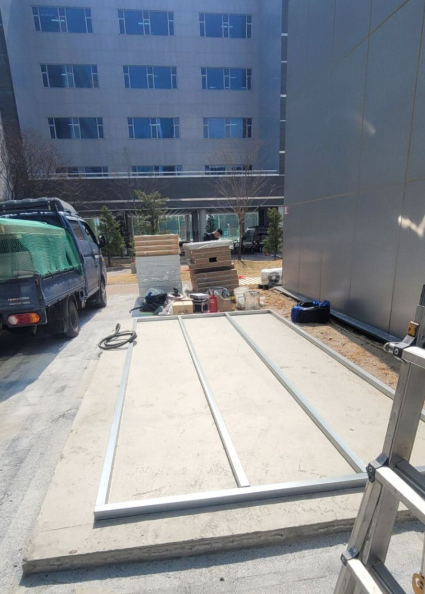
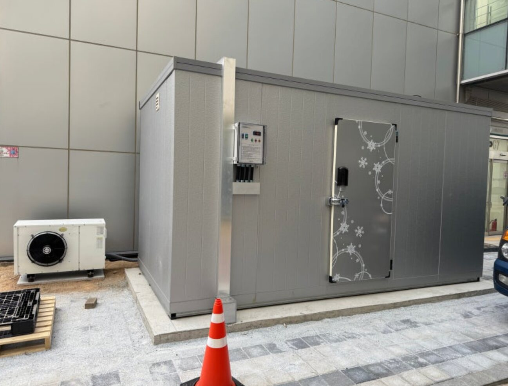
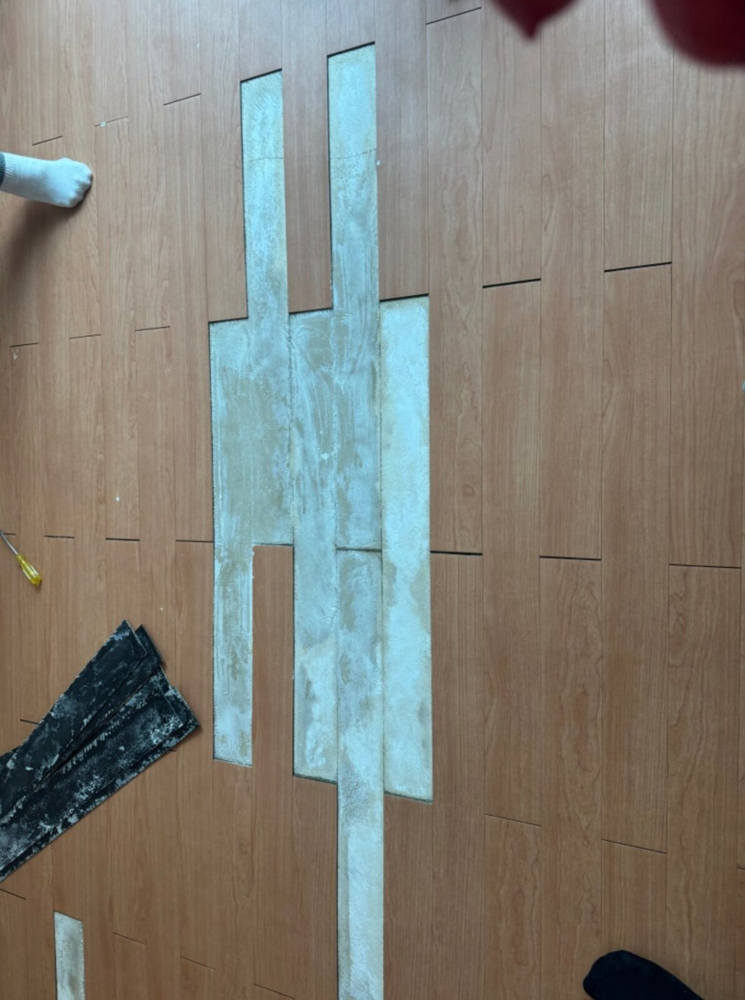
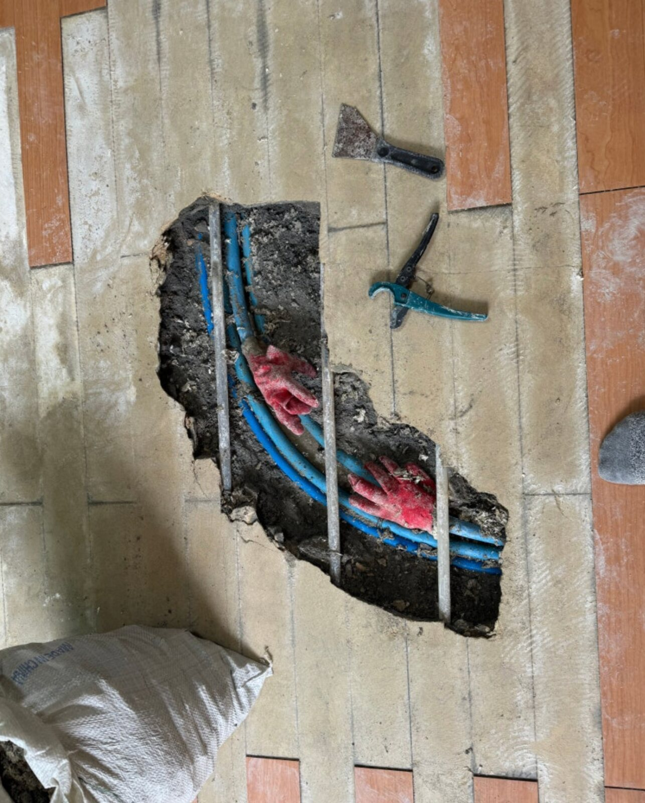
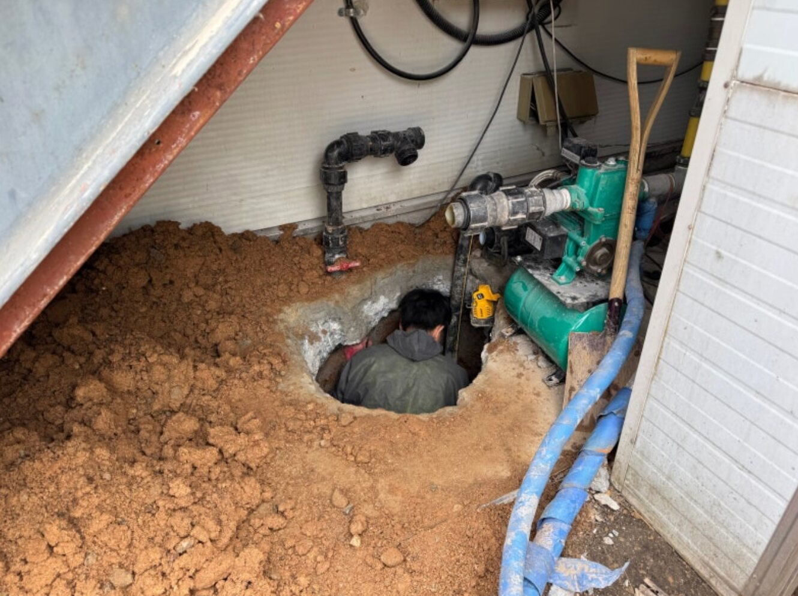
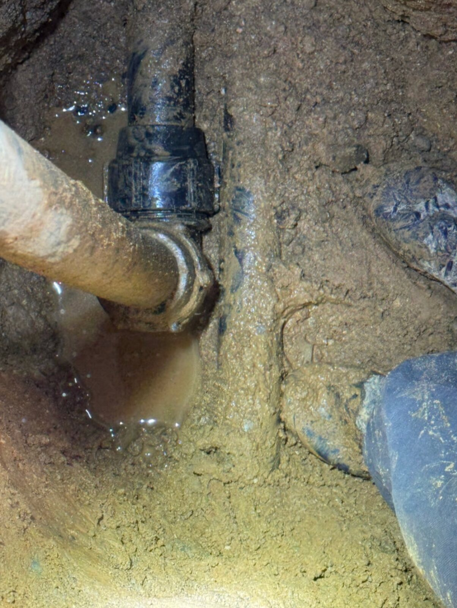

설계부터 시운전까지
저온창고 설치
냉장·냉동 목적, 목표온도, 창고 크기와 사용환경을 검토해 단열판넬과 냉동설비를 구성합니다.
- 신규 저온창고
- 기존 설비 교체
- 냉동기 점검·수리
누수 탐지·보수 전문 업체 · 저온창고 · 에어컨
오우케이 설비는 누수 탐지·보수를 전문으로 합니다. 누수 원인을 꼼꼼히 확인하고 필요한 배관·방수 보수를 안내합니다. 저온창고 설치와 에어컨 유지관리도 상담해 드립니다.
OK FACILITY CARE
MASTER SERVICES
현장 조건을 먼저 확인하고 꼭 필요한 공사와 관리방법을 제안합니다.
설계부터 시운전까지
냉장·냉동 목적, 목표온도, 창고 크기와 사용환경을 검토해 단열판넬과 냉동설비를 구성합니다.
설치부터 유지관리까지
주택·상가·사무실·공장에 맞는 장비를 선정하고 배관, 이전설치, 세척과 점검을 지원합니다.
누수 전문 · 보이지 않는 원인까지
오우케이 설비는 천장·벽·바닥의 누수 증상을 확인하고 탐지 장비와 현장 경험을 바탕으로 원인을 찾아 보수합니다.
PROCESS
공사 종류와 현장사진을 보내주세요.
증상과 설치조건을 먼저 확인합니다.
배관·전기·온도·누수원인을 점검합니다.
확정 견적을 안내하고 안전하게 시공합니다.
FIELD RECORD
오우케이 설비가 직접 진행한 실제 시공과 누수 탐지·보수 현장입니다.
설치 공간의 바닥 기초와 주변 환경을 확인한 뒤 단열판넬, 냉동설비, 제어반과 출입문까지 현장 조건에 맞춰 완성했습니다.


바닥 마감 아래의 누수 의심 구간을 좁혀 배관을 확인하고, 필요한 부분만 굴착하여 누수 배관을 보수했습니다.


공장 수도배관의 누수 구간을 확인한 뒤 약 2m 깊이까지 안전하게 굴착해 내려가 실제 누수 지점을 찾아 보수했습니다.


KAKAO CONSULTATION
작업 내용과 현장 조건을 확인한 후 개별적으로 안내드립니다.
주택·상가·공장 등 현장마다 작업 범위가 다릅니다. 현장 확인 후 견적을 안내드립니다.
카카오톡 채널에서 작업 종류, 현장 지역, 증상 또는 설치 조건을 알려주세요. 사진이 있다면 채팅창에 첨부해 주세요.
PHOTO CONSULTATION
현장 전체 모습과 누수 의심 부위를 함께 촬영하면 증상 파악에 도움이 됩니다.
CONTACT
오우케이 설비가 직접 확인하고 상담드립니다.